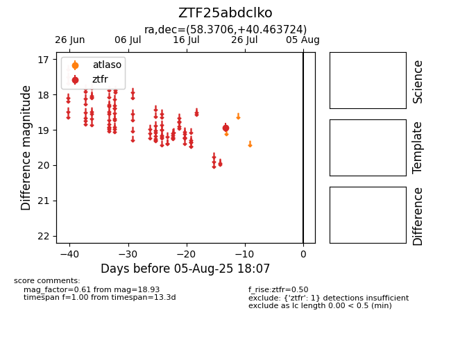

Target ZTF25abdclko at 2025-08-05 18:07, see:
FINK: fink-portal.org/ZTF25abdclko
Lasair: lasair-ztf.lsst.ac.uk/objects/ZTF25abdclko
ALeRCE: alerce.online/object/ZTF25abdclko
alt names
ZTF25abdclko (ztf,fink)
coordinates:
equatorial (ra, dec) = (58.3706,+40.46372)
galactic (l, b) = (156.4104,-10.28744)
photometry
last ztfr=18.93
1 ztfr detections
